Самые красивые птицы на земле
Мандаринка – самая красивая утка на Земле. У самца мандаринки золотые блестящие «зеркальца» на крыльях, коричневая спинка и светло-красный клюв. Эта красивая утка занесена в Красную книгу.
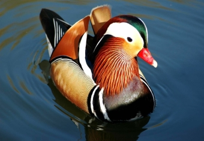 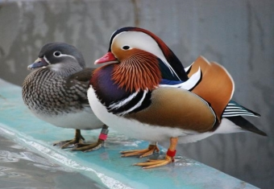Солнечные цапли — (Eurypygidae) семейство птиц отряда журавлеобразных; единственный представитель семейства Eurypyga helias.
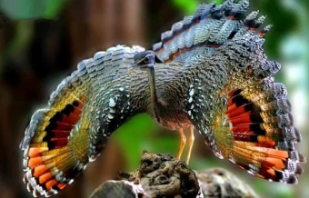 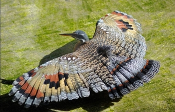Райские птицы — эти прекрасные создания является родней нашим воронам.
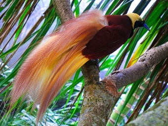 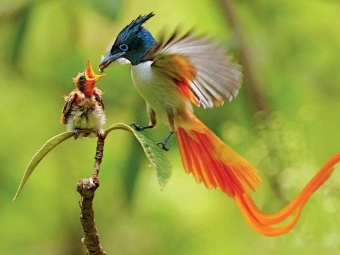Синеголовая великолепная райская птица, которую легко узнать по закрученным хвостовым перьям и великолепной окраске. Бирюзовая «шапочка», которая встречается на голове только у самцов, на самом деле является участком кожного покрова птицы.
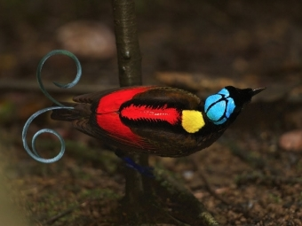
Венценосные голуби - род птиц семейства голубиных, содержащий три вида. Все они внешне довольно похожи, но отличаются друг от друга ареалами.
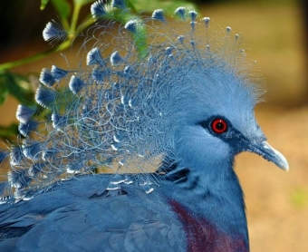
Квезаль считается самой красивой птицей на свете. Кроме того, эта птица является национальным символом Гватемалы, и в её честь даже назвали национальную валюту.
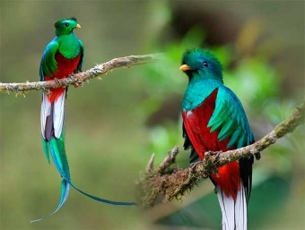 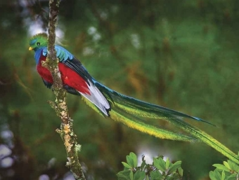Тупик, или атлантический тупик — морские птицы из семейства чистиковых отряда ржанкообразных. Обитают на побережьях Атлантического и Северного Ледовитого океанов. Гнездятся в норах на птичьих базарах. Питаются рыбой, в основном песчанками.
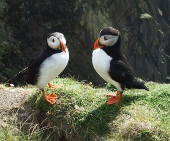
Венценосный журавль — крупная птица из семейства настоящих журавлей, ведущая оседлый образ жизни в Западной и Восточной Африке.
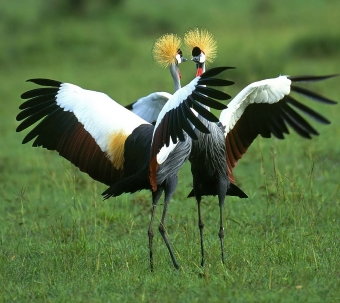 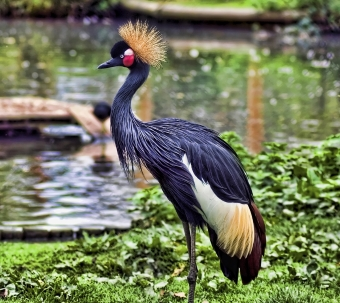Длиннохвостый бархатный ткач в англоязычном мире имеет другое название – «вдова» – которое эта южно-африканская птица получила благодаря своему необыкновенно длинному «траурному» хвосту. Длина такого хвоста у самцов может достигать 40 см, что в два раза больше длины их тела.
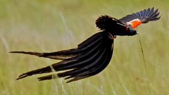 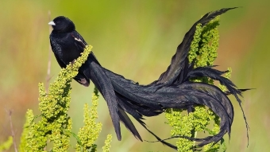Северный Кардинал или виргинский кардинал — вид птиц из семейства кардиналовых (Cardinalidae). В семи штатах США избран официальным символом (Вирджиния, Западная Вирджиния, Иллинойс, Индиана, Кентукки, Огайо и Северная Каролина).
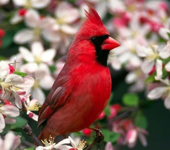 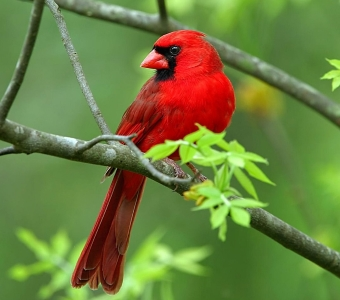Чешуйчатая райская птица. На голове у самцов есть плюмажи (пальцекрылки), словно расписанные орнаментом. Когда этих птиц впервые завезли в Европу, никто не верил, что это является их естественным украшением.
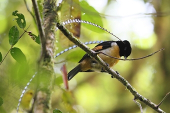 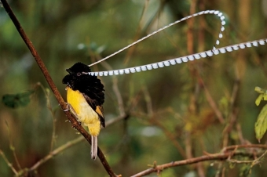Обыкновенный зимородок, или голубой зимородок — мелкая птица семейства зимородковых, немного крупнее воробья.
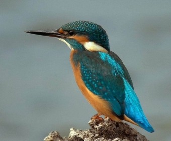 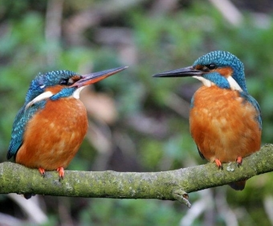Павлин, или индийский павлин, или обыкновенный павлин, — наиболее многочисленный вид павлинов. Является монотипическим видом, то есть не подразделяется на подвиды, однако имеет целый ряд цветовых вариаций. Одомашнен человеком.
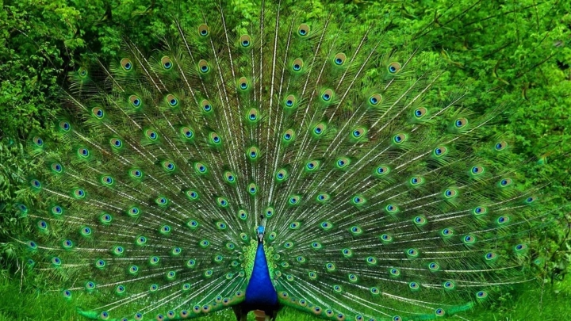